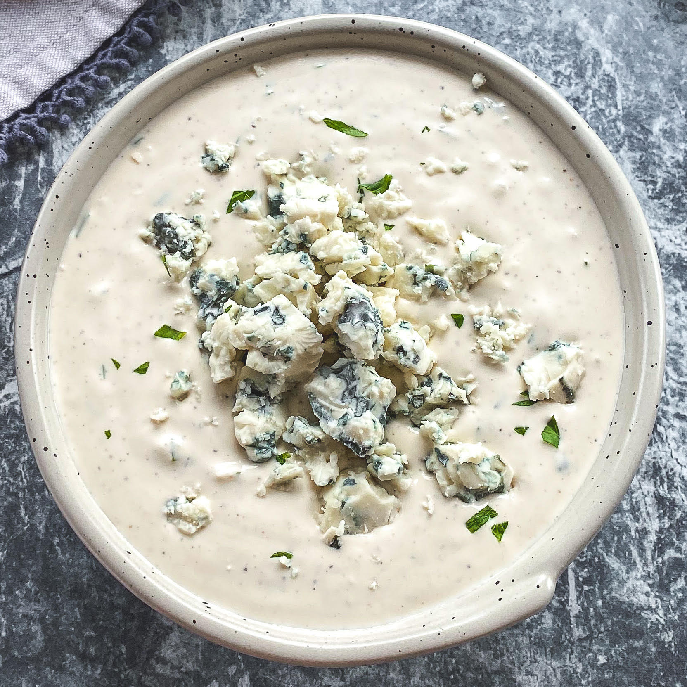

Blue Chesse Dressing

Elevate your salads and snacks with the bold flavor of homemade blue cheese dressing. Our recipe combines the creamy richness of mayonnaise and sour cream with the distinct tang of crumbled blue cheese, creating a decadent dressing that's sure to tantalize your taste buds. Perfect for drizzling over crisp lettuce, dipping with buffalo wings, or adding a gourmet touch to sandwiches and wraps, this homemade blue cheese dressing adds a deliciously savory punch to any dish. With just a few simple ingredients and quick preparation, you can enjoy the luxurious taste of homemade blue cheese dressing anytime, anywhere.
Ingredients:
- 1/2 cup mayonnaise
- 1/2 cup sour cream
- 1/4 cup crumbled blue cheese
- 1 tablespoon lemon juice
- 1/2 teaspoon Worcestershire sauce
- 1/4 teaspoon garlic powder
- Salt and pepper to taste
- In a bowl, combine mayonnaise, sour cream, crumbled blue cheese, lemon juice, Worcestershire sauce, and garlic powder.
- Season with salt and pepper to taste.
- Stir until well combined.
- Refrigerate for at least 1 hour before serving to enhance flavor.